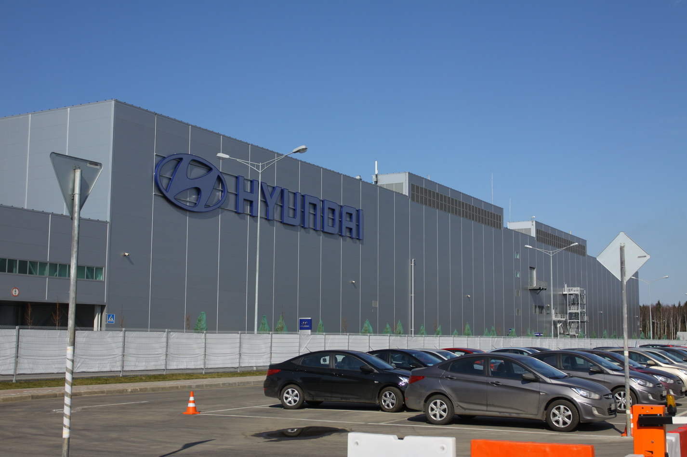

                <section class="common-section object-section select_fanc">
            <div class="common-white-wrap">
                <h1 class="object-title">Завод «Hyundai»</h1>
                <div class="galleria-wrap">
                    <div class="fotorama" data-fit="cover" data-width="1600"
                         data-arrows="true" data-ratio="18/9"
                         data-max-width="100%" data-nav="thumbs"
                         data-thumbheight="64" data-allowfullscreen="true">
                                                    
                                            </div>
                </div>
                <div class="additional-content-wrap">
                    <p><strong>Сдача объекта:</strong><br/> сентябрь 2010 г.</p>
                    <p><strong>Общая площадь:</strong><br/>2000000&nbsp;м²</p>
                    <p><strong>Адрес:</strong><br/> г. Сестрорецк, Левашовское ш. участок 1</p>
                </div>
                <div class="main-content-wrap">
                    <p>Строительство Завод «Hyundai». Это первый завод в России иностранного производителя полного цикла.</p>
<p>Строительство завода Hyundai под Санкт-Петербургом началось в 2008 году. Строительная компания ООО «Адамант-Строй» приняла участие в отделочных и общестроительных работах.</p>
<p>21 сентября 2010 г. в присутствии председателя правительства РФ Путина Владимира Владимировича торжественно открыт завод «Хёндэ».</p>
                </div>
            </div>
        </section>
    